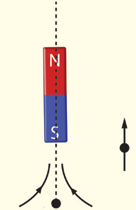
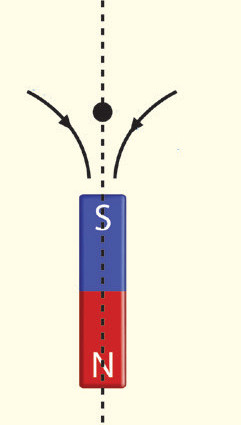

Activity 3.8

Procedure


Questions
(a) Why did the compass change direction?
(b) Could you locate any neutral point on the N–S or E–W lines? Explain.
Magnetic shielding
Magnetic shielding is the process of limiting the flow of magnetic fields between two locations, or across an object, by separating them with a barrier made of conductive ferromagnetic materials. Without a shield, the magnetic field lines will pass through a region as in Figure 3.37.
Field lines from the north pole cannot be stopped from moving to the south pole of a magnet, but they can be redirected.
In this case, the channel is a length of ferromagnetic material such as soft iron.
When magnetic field lines reach the iron, they flow along it rather than through the magnet itself.
Materials that can redirect magnetic field lines are said to be